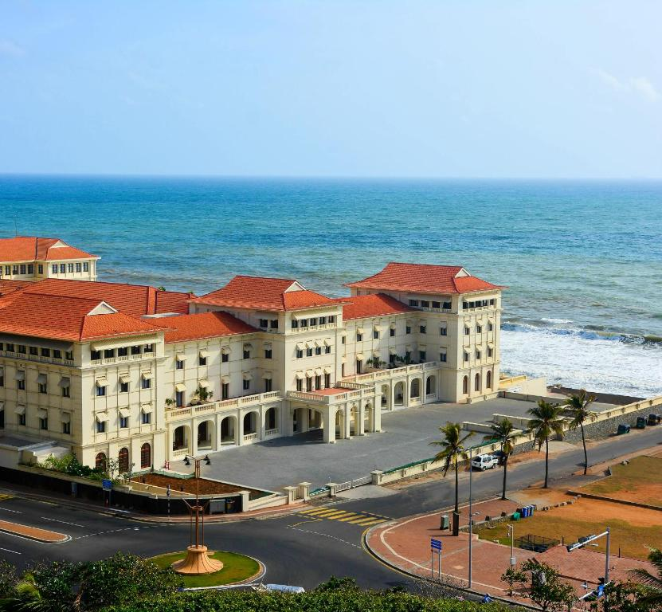
Galle Face Hotel
A historic 19th-century colonial hotel offering ocean views and timeless luxury.
Visit Website
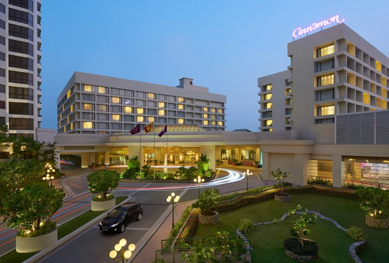
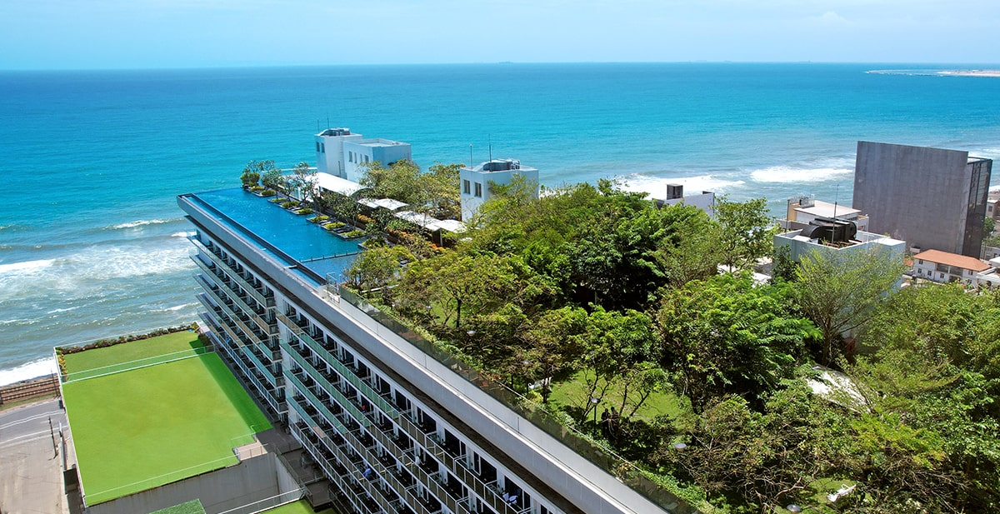
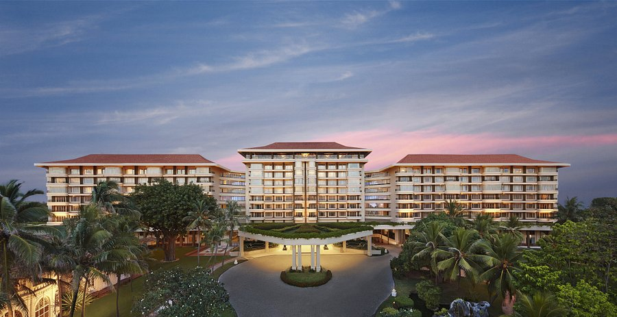
Taj Samudra
Set across 11 acres of landscaped gardens facing the historic Galle Face Green.
Visit Website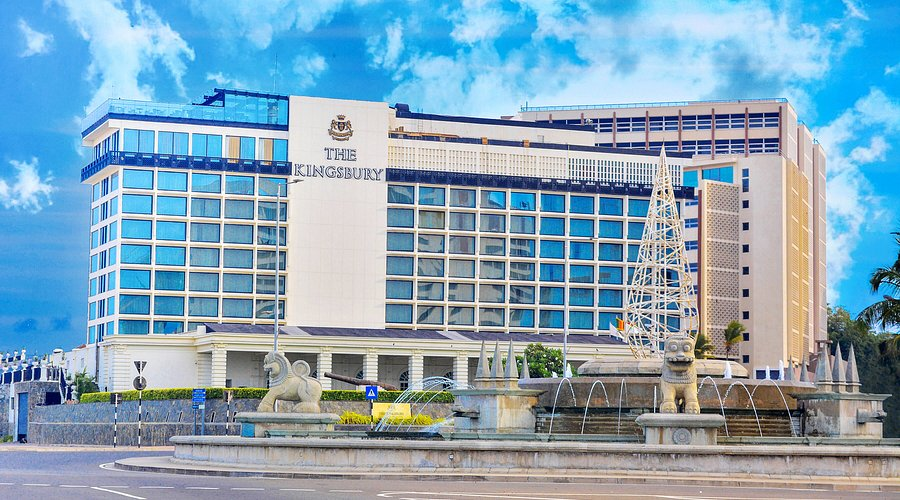
The Kingsbury
A stately, opulent hotel known for its incredible high tea and rooftop bars.
Visit Website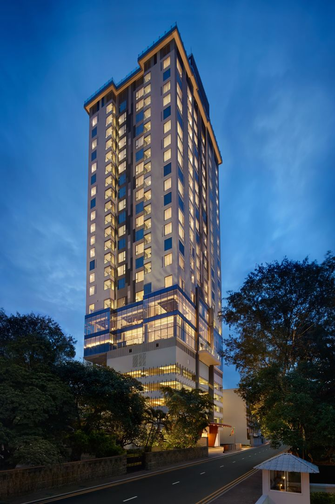
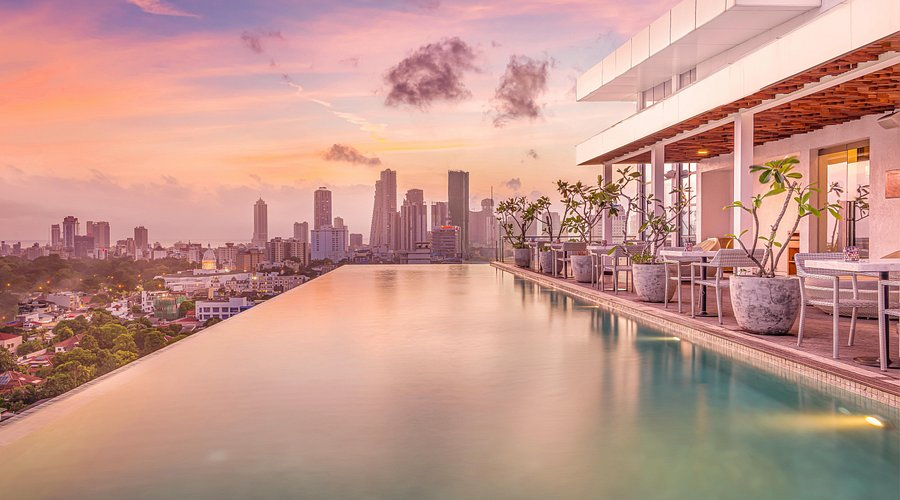
Jetwing Colombo Seven
Located in the heart of Cinnamon Gardens with a stunning rooftop infinity pool.
Visit Website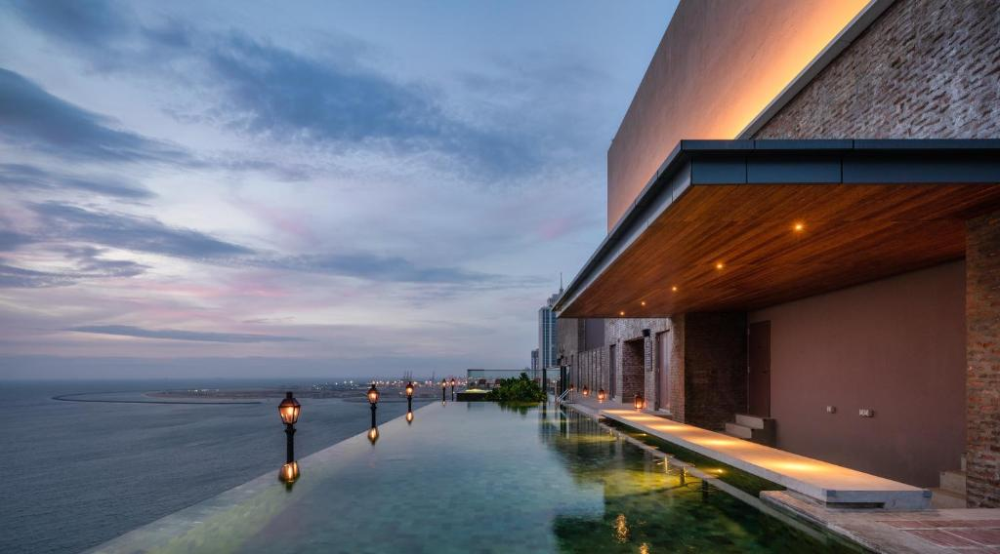
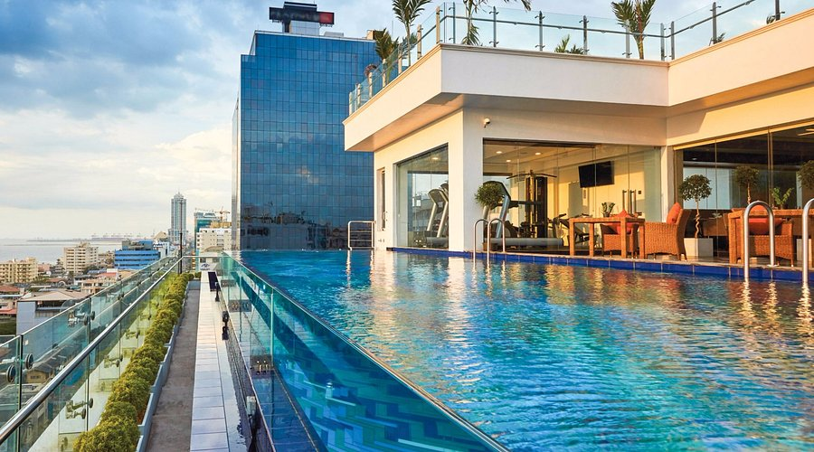
Mandarina Colombo
A sleek, business-friendly hotel offering incredible views of the city skyline.
Visit Website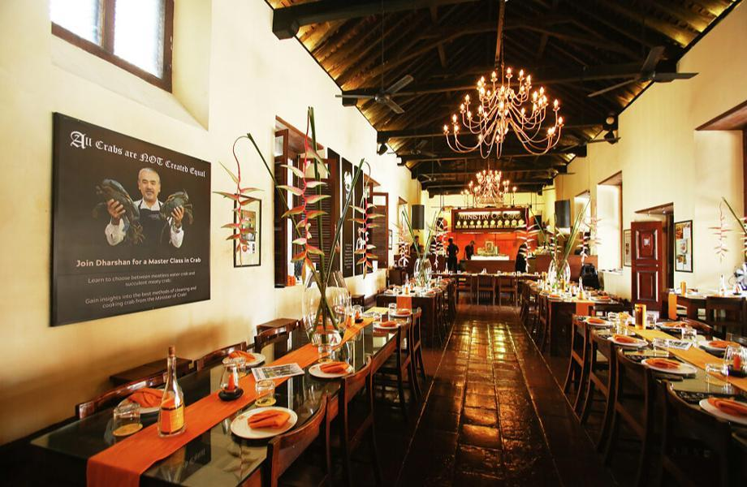
Ministry of Crab
Ranked among Asia's 50 Best Restaurants, famous for massive lagoon crabs.
Visit Website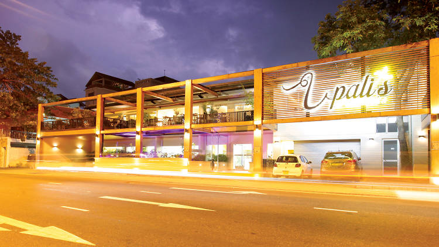
Upali's by Nawaloka
Experience authentic, rich Sri Lankan curries in a comfortable setting.
Visit Website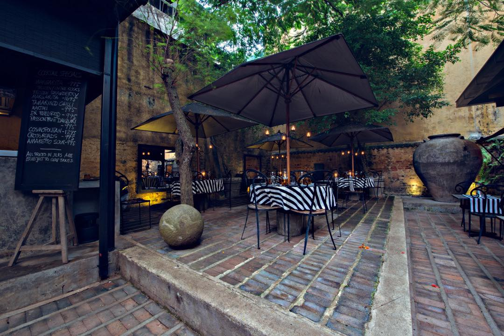
The Gallery Cafe
A chic dining experience in Geoffrey Bawa's former architectural office.
Visit Website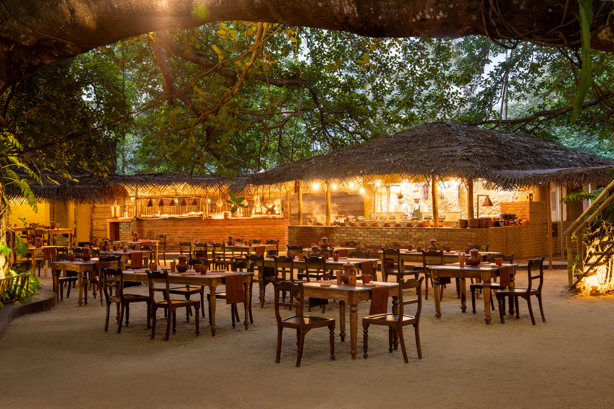
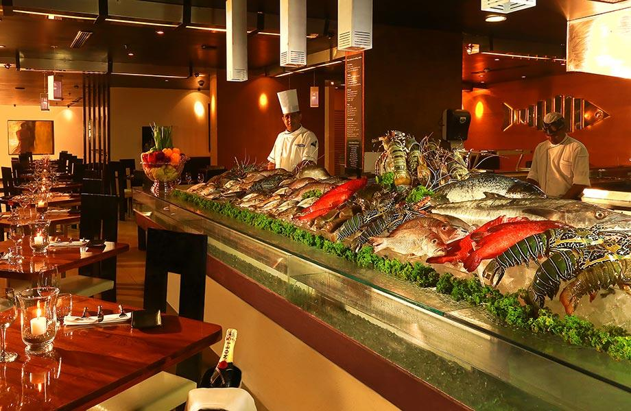
The Lagoon
Modeled after a lively seafood market, choose your catch and how it is cooked.
Visit Website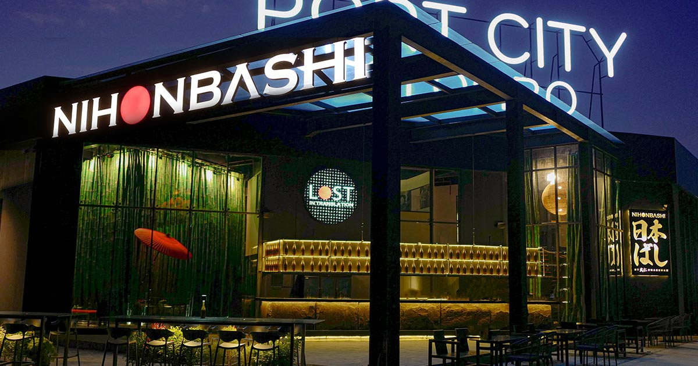
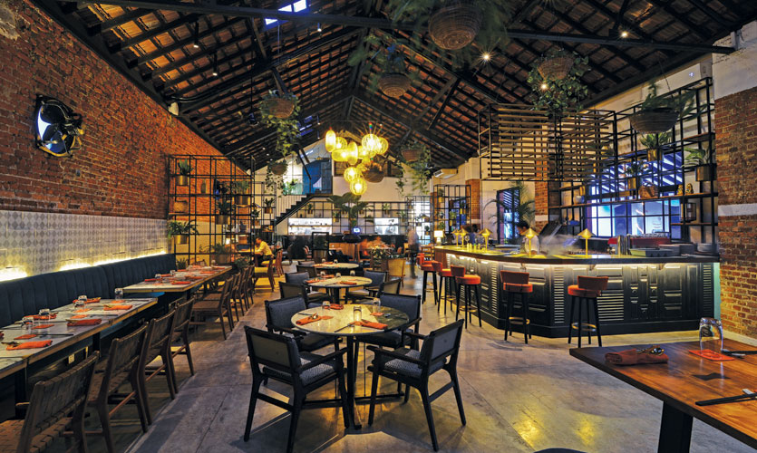
Monsoon Colombo
A vibrant pan-Asian restaurant located in the trendy Park Street Mews.
Visit Website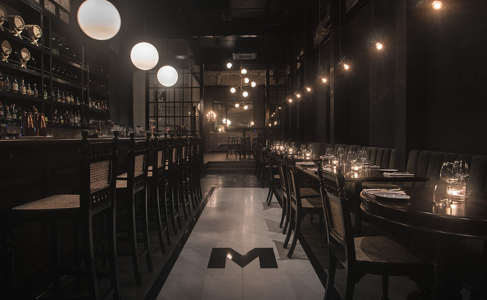
Baillie Street Merchants
A hidden speakeasy and tapas bar offering a moody, vintage atmosphere.
Visit Website